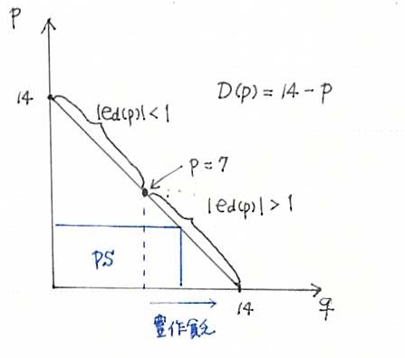

経済学で出る数学
ワークブックでじっくり攻める：問1.18解説
問1.18でとりあげた「豊作貧乏−不作だと」では，ちょっとメモで「「豊作貧乏」はいつでも起きる現象ではないことがわかる．経済学的には「弾力性」の概念に関わる．」と，コメントしました．その理論的背景の説明です．
【豊作貧乏と需要の価格弾力性】

生産者余剰 $PS=D(p)p$ なので積の微分公式より
\[
PS^{\prime}=D^{\prime}(p)p+D(p)=\left(1+\dfrac{pD^{\prime}(p)}{D(p)}\right)
=\left(1-|e_d(p)|\right)
\]
従って
- $\left|e_d(p)\right| < 1 $のときは $p$が上昇すると $PS$ が上がる．
- $\left|e_d(p)\right| > 1 $のときは $p$が上昇すると $PS$ が下がる．
本問では $D^{\prime}(p)=-1$なので，需要の価格弾力性は
\[
e_d(p)=D^{\prime}(p)\dfrac{p}{D(p)}=-1\times\dfrac{p}{14-p}=\dfrac{p}{p-14}.
\]
したがって，$e_d(p)$の絶対値が $1$ となる $p$ は
$\dfrac{p}{p-14}=1 \Longleftrightarrow p=7$となる．
よって，本問では
- $p >7 (q<7)$のときは $q$ が増加すると， $PS$ が上がる：豊作リッチ
- $p < 7 (q>7)$のときは $q$ が増加すると， $PS$ が下がる：豊作貧乏
であることがわかる．
【豊作貧乏と需要の価格弾力性終わり】
解答例一覧へ